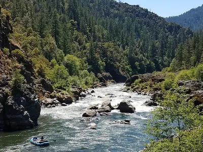
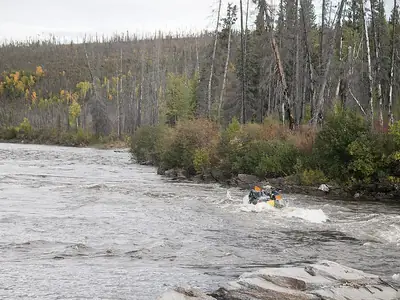
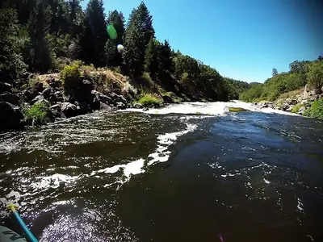
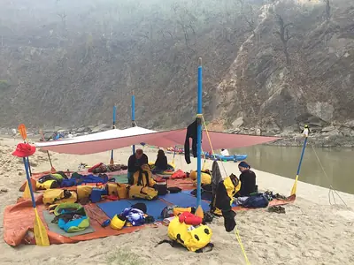

Half Day Adventure
A gentle introduction to rafting on calm water with a few splashy Class II waves. Perfect for families with young kids and first-time paddlers.
4 hours · Class II · Ages 6+
Whether you want a relaxing float or a heart-pounding ride through big rapids, we have a trip for you. All trips include a certified guide, safety gear and a riverside snack.

A gentle introduction to rafting on calm water with a few splashy Class II waves. Perfect for families with young kids and first-time paddlers.
4 hours · Class II · Ages 6+

A full day on the river with a mix of fun Class III rapids and quiet stretches for swimming. Lunch on a sandy beach is included.
8 hours · Class III · Ages 10+

Our most extreme run. Powerful Class IV rapids and steep drops for experienced, confident paddlers who want a real challenge.
8 hours · Class IV · Ages 16+

Two days on the river with a night under the stars. Our crew sets up camp and cooks dinner and breakfast while you enjoy the canyon.
2 days · Class III · Ages 12+
| Trip | Duration | Rapid Class | Minimum Age | Price per Person |
|---|---|---|---|---|
| Half Day Adventure | 4 hours | II | 6 | $75 |
| Big Mallard | 8 hours | III | 10 | $140 |
| Los Dientes del Diablo | 8 hours | IV | 16 | $180 |
| Overnight Camping | 2 days | III | 12 | $320 |
Spots fill up fast during the summer season. Reach out today to reserve your trip.
Book Your Trip